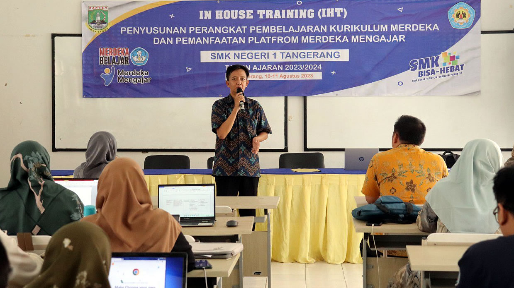

SisterFani
Satu pintu bagi keluarga dan guru untuk mengikuti kegiatan sekolah.
Lihat SisterFaniGuru · Pengembang aplikasi
Saya mengajar di Tangerang dan mengembangkan aplikasi untuk kebutuhan sekolah, dari absensi kelas hingga layanan untuk orang tua.
Jelajahi aplikasi Tentang saya
Pada 1997, situs pribadi saya meraih juara ketiga kategori umum dalam lomba perancangan web nasional yang diselenggarakan APJII dan Microsoft Indonesia. Sekitar 2015, saya mulai membangun ruang belajar berbasis Moodle. Di SMK PGRI 1 Tangerang, guru membagikan modul dan video melalui Moodle, dan murid mengaksesnya lewat SisterFani.
Pada 2023, saya menerima penghargaan Guru Kreatif jenjang SMK/MAK di Acer Smart School Awards. Setahun kemudian, saya mendampingi calon Guru Penggerak angkatan 11 sebagai Pengajar Praktik.
Sumber: Portofolio Mawan Agus Nugroho dan pengumuman pemenang dari Acer Indonesia.